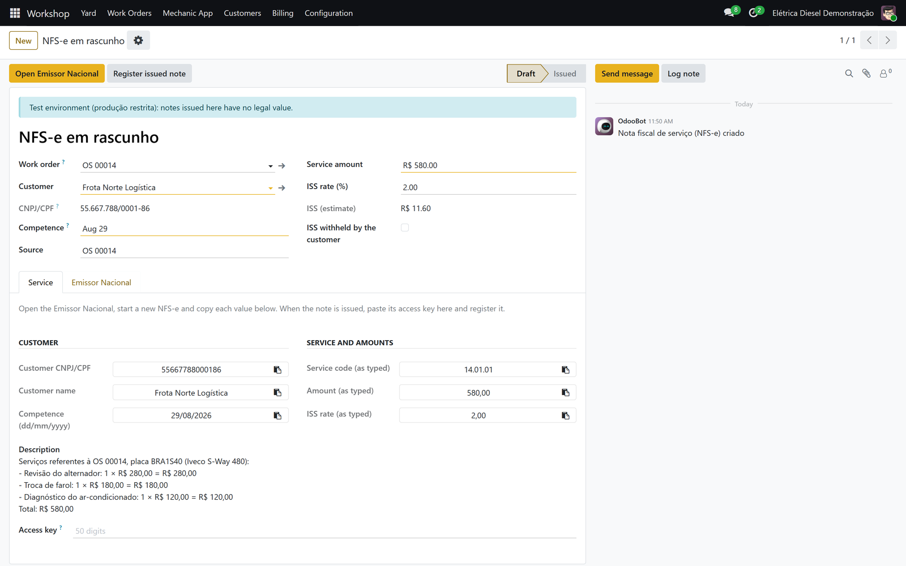
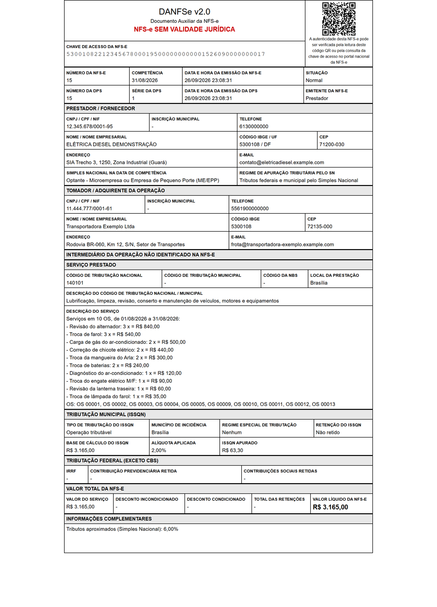
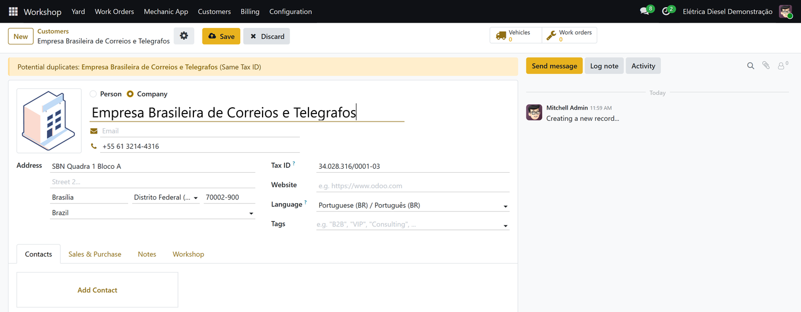
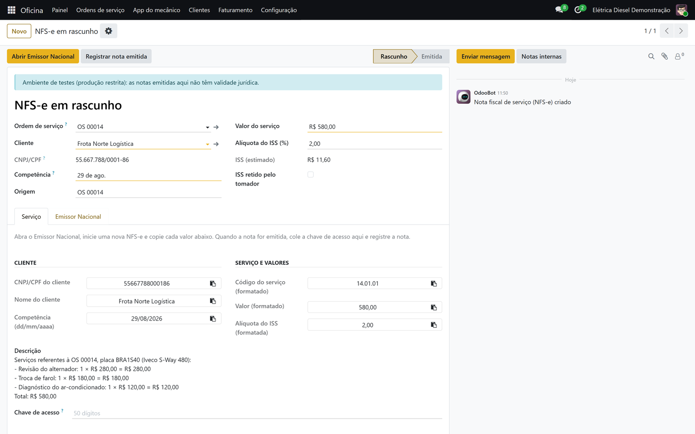

NFS-e Nacional · Odoo 19
Brazilian service invoices (NFS-e) through the national system (www.nfse.gov.br), from any service company on Odoo 19. Start in assisted mode with no certificate, and switch to direct emission through the API when the company's A1 certificate is at hand.


DANFSe from the authorised XML

A customer filled in from the CNPJ
Emita a NFS-e do padrão nacional direto do Odoo 19. Comece no modo assistido, sem certificado: o sistema organiza cada valor para copiar no Emissor Nacional. Com o certificado A1, emita direto pela API, com validação pelo XSD oficial, assinatura, DANFSe, cancelamento e recuperação de resposta perdida. Clientes preenchidos pelo CNPJ (cadastro da Receita Federal) e pelo CEP, de graça. Serve para qualquer empresa de serviços.

Licence: Odoo Proprietary License v1.0 (OPL-1). Questions and support: use the contact button on this page. This module helps you issue notes; it is not tax advice.